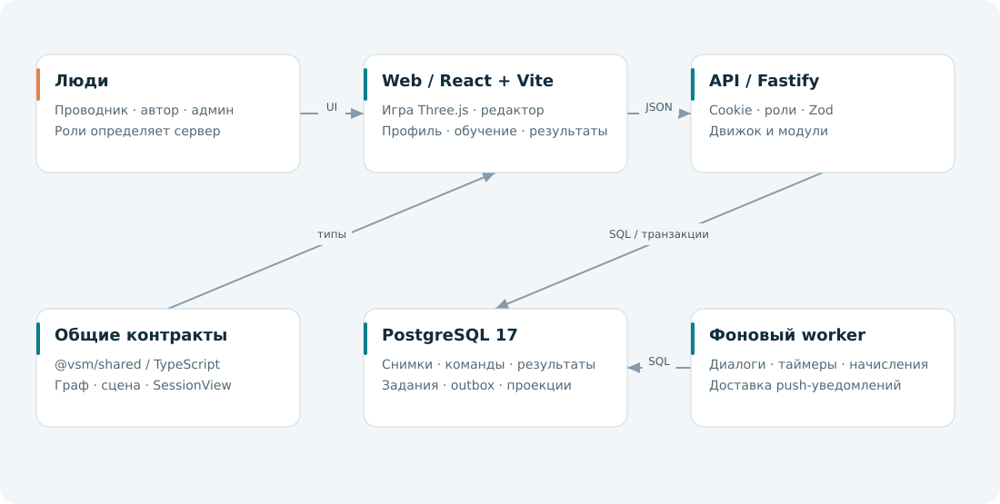
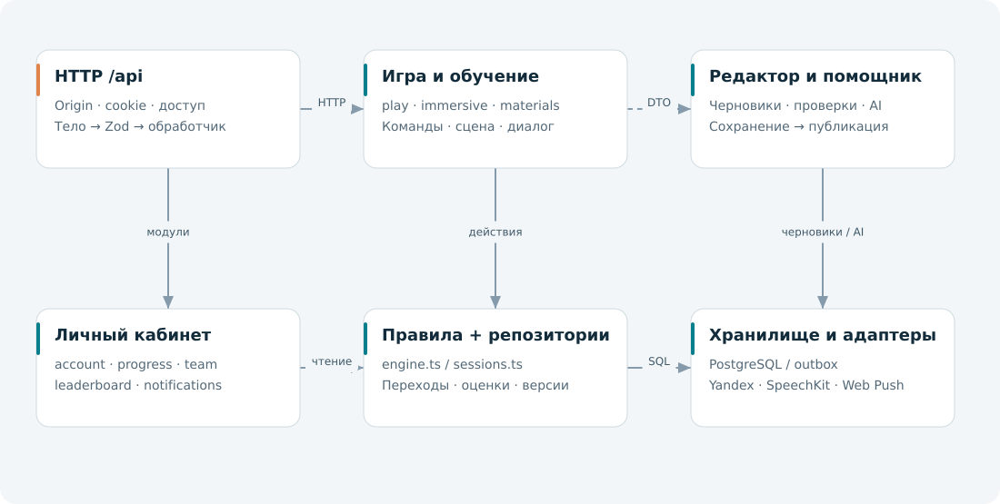
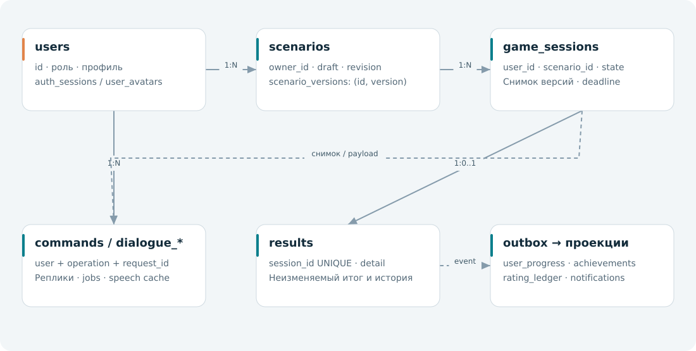
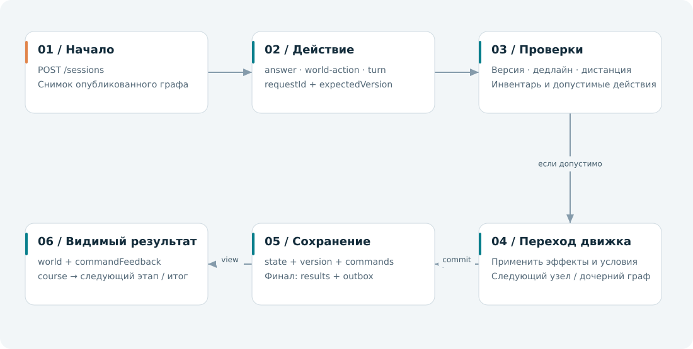
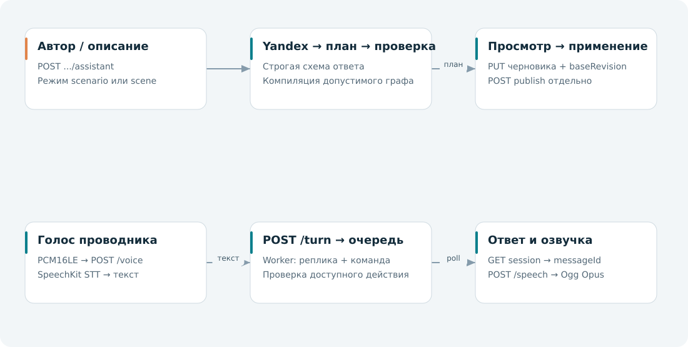
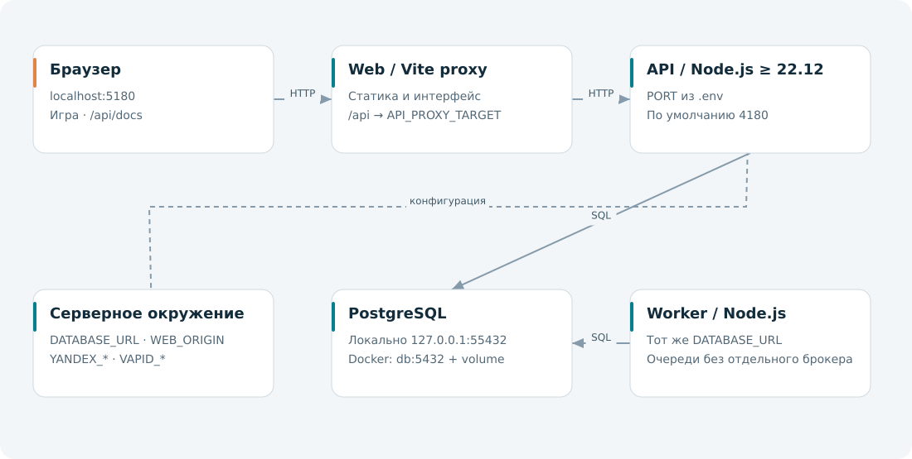

57 API-операций. React/Vite/Three.js → Fastify → PostgreSQL. Фоновые задачи выполняет worker. Разделы отключаются независимо.
Войдите на сайте или через POST /api/auth/login в Swagger. Существующая cookie используется автоматически; права пользователя сохраняются. Проверка Origin остаётся включённой.
Демо: fullstack-vsm.duckdns.org. В Docker API и PostgreSQL доступны только во внутренней сети. Локальная разработка: web 5180, API 4180; другой API задайте через API_PROXY_TARGET.
Общий таймер: timerMode=scenario и estimatedMinutes. Начатые попытки закреплены за публикацией. Общий рейтинг второго сайта включает всех проводников при LEADERBOARD_ALL_STUDENTS=true.
Уведомления: фильтры/страницы и удаление прочитанных; миграция010 сохраняет event_key, удалённые записи не возвращаются.
57 методов
| Метод | Путь | Назначение |
|---|---|---|
| GET | /api/health | Проверка API и базы |
| POST | /api/auth/login | Войти |
| POST | /api/auth/register | Зарегистрировать проводника и открыть сеанс |
| POST | /api/auth/logout | Выйти |
| GET | /api/me | Текущий пользователь, флаги и время |
| GET | /api/modules | Доступность модулей |
| PATCH | /api/modules/{id} | Включить или выключить модуль |
| GET | /api/admin/users | Пользователи для администратора |
| PATCH | /api/admin/users/{id}/role | Назначить роль |
| GET | /api/account | Профиль |
| PATCH | /api/account | Изменить имя и фамилию |
| POST | /api/account/avatar/preview | Подготовить ориентированное превью без сохранения аватара |
| PUT | /api/account/avatar | Загрузить исходное фото до 25 MiB (JPEG, PNG, WebP, AVIF, GIF, TIFF, HEIC); сервер обрезает и сжимает в 256×256 WebP |
| DELETE | /api/account/avatar | Удалить свой аватар |
| GET | /api/users/{id}/avatar | Прочитать аватар; доступно при выключенном account |
| GET | /api/scenarios | Опубликованные сценарии |
| GET | /api/sessions | Прохождения пользователя |
| POST | /api/sessions | Начать прохождение |
| GET | /api/sessions/{id} | Текущее состояние прохождения |
| POST | /api/sessions/{id}/answer | Выбрать доступный ответ |
| POST | /api/sessions/{id}/timeout | Зафиксировать истёкший таймер |
| POST | /api/sessions/{id}/world-action | Выполнить действие в сцене |
| POST | /api/sessions/{id}/world-move | Переместиться в вагоне |
| GET | /api/immersive/catalog | Каталог вагона и пространственных команд для автора |
| GET | /api/editor/scenarios | Черновики автора |
| POST | /api/editor/scenarios | Создать черновик |
| GET | /api/editor/scenarios/{id} | Получить черновик |
| PUT | /api/editor/scenarios/{id} | Сохранить черновик |
| POST | /api/editor/scenarios/{id}/validate | Проверить граф |
| POST | /api/editor/scenarios/{id}/publish | Опубликовать неизменяемую версию |
| GET | /api/progress | Прогресс, достижения и цель недели |
| GET | /api/results | История результатов |
| GET | /api/results/{id} | Результат и разбор |
| GET | /api/notifications | Сохранённые уведомления |
| GET | /api/notifications/status | Точное число непрочитанных уведомлений |
| GET | /api/notifications/push | Наличие Web Push и публичный VAPID ключ |
| POST | /api/notifications/push/subscriptions | Привязать push-подписку к текущему сеансу |
| DELETE | /api/notifications/push/subscriptions | Отвязать push-подписку текущего сеанса |
| POST | /api/notifications/push/subscriptions/status | Проверить push-подписку текущего сеанса |
| PATCH | /api/notifications/{id} | Прочитать уведомление |
| DELETE | /api/notifications/{id} | Удалить своё прочитанное уведомление |
| POST | /api/notifications/read-all | Прочитать все уведомления |
| GET | /api/team | Рейтинг бригады, депо или компании |
| GET | /api/leaderboard | Лучший результат каждого корневого сценария за последние 720 часов |
| GET | /api/integrations/users | Экспорт пользователей |
| GET | /api/integrations/results | Экспорт результатов |
| GET | /api/notifications/feed | Фильтрованная страница видимых уведомлений |
| DELETE | /api/notifications/read | Удалить все свои прочитанные уведомления |
| GET | /api/materials | Материалы опубликованных сценариев |
| GET | /api/scenarios/{id}/materials | Проверенные учебные выдержки опубликованного сценария |
| POST | /api/sessions/{id}/turn | Сохранить реплику проводника и поставить ответ пассажира в очередь |
| POST | /api/sessions/{id}/voice | Распознать PCM16LE mono 16 кГц без отправки реплики |
| POST | /api/sessions/{id}/speech | Озвучить сохранённую реплику пассажира |
| GET | /api/editor/assistant | Доступность помощника для автора |
| POST | /api/editor/scenarios/{id}/assistant | Подготовить проверенное предложение без сохранения и публикации |
| GET | /api/scenarios/{id}/next | Следующая опубликованная ситуация линейного маршрута |
| GET | /api/openapi.json | Спецификация OpenAPI |
Схемы показывают основные связи. Кабинет и история читают сохранённые данные при выключенной игре. Схема запуска ниже относится к локальной разработке.





